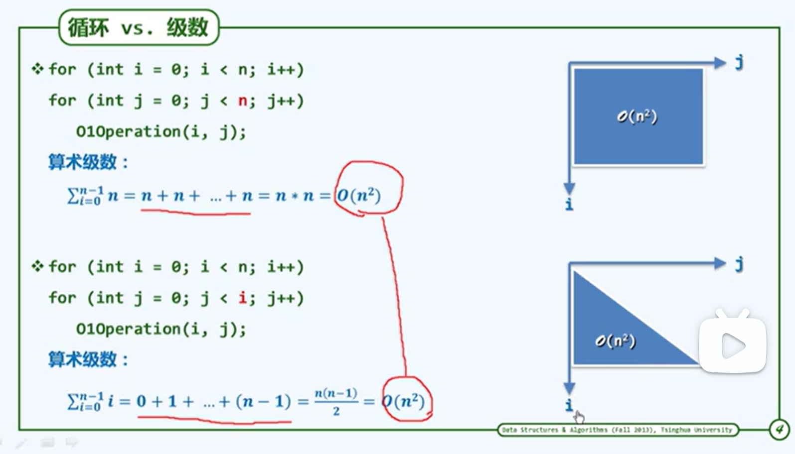

绪论
计算
- 研究对象：规律、技巧，过程规律方法
- 研究目标：高效计算、低耗
cs (手段)should be called computing science,for the same reason why surgery is not called knife science. -dijkstra
- 绳索计算机及其算法 12 垂直 3点的环
- 尺规计算机及其算法 机械地执行……
- 算法 *计算=信息处理
- 借助某种工具，遵照一定规则，以明确而机械的形式进行
- 计算模型=计算机=信息处理工具
- 算法，及特定计算模型下，旨在解决特定问题地指令序列
- 输入：问题；输出：答案；
- 正确性；确定性；可行性（大象冰箱）：每一基本操作都可实现，且在常数时间内完成
- 有穷性：hailstone 27 程序未必是算法
- 好算法 正确 健壮（不合法做处理）可读（结构化 准确命名 注释）效率： 既要马儿快快跑，又要马儿吃得少 算法+数据结构=程序 N.wirth,1976 狗尾续貂……（算法+数据结构）*效率（非简单堆砌）=computation
计算模型
度量 一把尺子标有刻度> to measure is to know.if you cannot measure it,you cannot improve it. -lord kelvin
- 算法分析
- 正确性；成本（性能）如何度量如何比较 如何归纳概括 分类 问题实例的规模往往是决定计算成本地主要因素最坏情况 成本最高 算法 输入（规模类型）程序员语言编译器 硬件：体系结构 软件：操作系统 引出理想平台或模型
- turing machine
- tape
- alphabet
- head 功能 读写
- state 经过一个节拍 转向另一个状态
- transition funtion 状态h停机
- ram *寄存器顺序编号 加减，赋值 二者是一班计算工具的简化和抽象，使我们独立于具体的平台 在这些模型中 运行时间转换 基本操作次数
大o记号 直尺的刻度
mathematics is more in need of good notations than of new theorems. 好读书不求甚解。 看重长远，更大规模，主流。 长远:n足够大 主流：非主流常系数低次项可忽略 上界悲观估计 Ω 下界 T(n)>cf(n) θ 确界
- 刻度1 常数o(1)
- 刻度2 对数o 常底数无所谓 loga n=loga b*logb n
- 刻度3 多项式n的 c次方
- 刻度4 线性 O(n)
- 刻度5 指数 2的n次方 2 subset NP-complete
算法分析
通过挖掘不变性和单调性来证明正确性
- 迭代：级数求和
- 递归：递归跟踪+递推方程
- 猜测+验证
级数
- 算术级数：与末项平方同阶
- 幂方级数:比幂次方高1
- 几何级数：与末项同阶,a>1
(

) 与上图做对比
冒泡排序
- 不变性：k轮扫描交换后，最大的k个元素必然就位
- 单调性：k轮扫描交换后，问题规模缩减至n-k
- 正确性： 之多经过n趟扫描
封底估算back-of-the-envelope calculation
费米 纸 原子弹爆炸当量
古希腊 地球直径
对时间
1day=24hr*60min*60sec=10^5 sec
1life=1century=100yr*365=310^4day=3*10^9sec
三生三世=300yr=10^10 三生三世中的一天=一天的一秒
宇宙大爆炸至今=10^21
考察对全国人口普查数据的排序
 算法改进的威力
算法改进的威力
迭代和递归
to iterate is human,to recurse,divine ?
- 减而治之 规模缩小+平凡问题 递归基 *数组倒置
```c++
void reverse(int* A,int lo,int hi);
if (lo)//low high 之间有足够多的元素,问题规模奇偶性不变，每次减2，需要两个递归基
- 分而治之
``` 数组求和:二分递归
sum(int A[],int lo,int hi){
//区间范围【L,h】
if (lo==hi)return A[LO];
int mi=(lo+hi)>>1;//chuyi2
return sum(A,lo,mi)+sum(A,mi+1,hi);//入口形式为sum(A,0,n-1)
}
算法所需时间 几何级数 * Max2:迭代一 从数组区间A[lo,hi]中找到最大两个整数A[]和A[] 循环扫描，三重，扫描前后 x1得到 o(2n-3) M:二
```c++
void(int A[],int lo,int hi,int &x1,int &x2){
if(A[x1=lo]<A[x2=lo+1])swap(x1.x2);//initial
for(int i=lo+2;i<hi;i++>)
if(A[x2]<A[i])
if(A[x1]<A[x2=i])
swap(x1,x2);
}
```

Max2:递归+分治